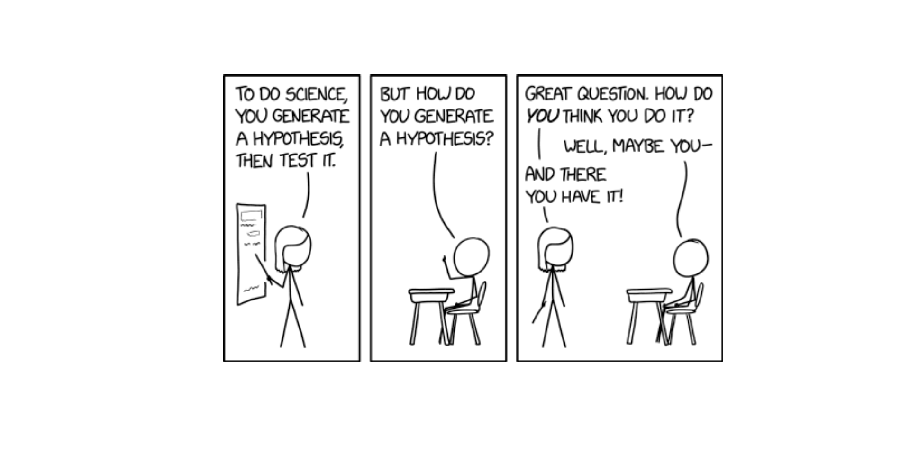
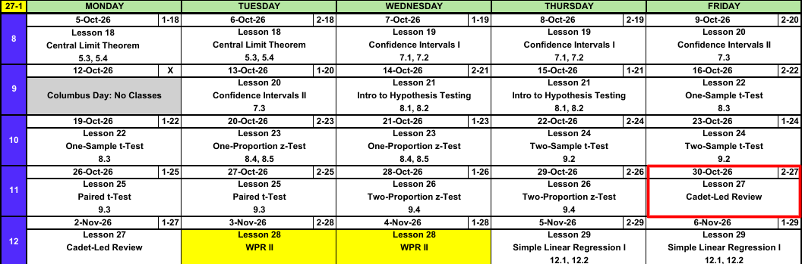

Lesson 27: Cadet-Led Review
Calendar

WPR II Admin
ImportantWPR II: Lesson 28 (3, 4 Nov)
- Covers: Lessons 18 through 26
- Time: 55 minutes
- Authorized: the course statistics reference card (SRC), R-Lite, and the issued calculator
R-Lite and the SRC
Study Materials
- WPR II Review and Key on Canvas
What We’re Doing: Lesson 27
Objectives
- Review Lessons 18-26.
Required Reading
None
Break!
Cadet-Led Review
Block II Outline
Sampling Distributions and Confidence Intervals
Lesson 18: Central Limit Theorem (Devore 5.3, 5.4)
- Statistic varies sample to sample, its distribution is the sampling distribution
- \(\bar{X} \sim N\left(\mu,\ \left(\dfrac{\sigma}{\sqrt{n}}\right)^2\right)\), approximately, for \(n > 40\)
- Normal population: exact for any \(n\)
- Standard error \(\sigma/\sqrt{n}\) shrinks as \(n\) grows
pnorm(x, mu, sigma/sqrt(n))- \(\hat{p} \sim N\left(p,\ \dfrac{p(1-p)}{n}\right)\), approximately, when \(np \ge 10\) and \(n(1-p) \ge 10\)
Lesson 19: Confidence Intervals I (Devore 7.1, 7.2)
- \(\text{estimate} \pm \text{critical value} \times \text{standard error}\)
- Mean, \(n > 40\): \(\bar{x} \pm z_{\alpha/2}\,\dfrac{s}{\sqrt{n}}\)
- Proportion, \(n\hat{p} \ge 10\) and \(n(1-\hat{p}) \ge 10\): \(\hat{p} \pm z_{\alpha/2}\sqrt{\dfrac{\hat{p}(1-\hat{p})}{n}}\)
qnorm(0.975)for 95%,qnorm(0.95)for 90%,qnorm(0.995)for 99%- 95% confident describes the method, not one interval
Lesson 20: Confidence Intervals II (Devore 7.3)
- Small sample, normal population: \(\bar{x} \pm t_{\alpha/2,\,n-1}\,\dfrac{s}{\sqrt{n}}\)
- \(\text{df} = n - 1\),
qt(0.975, n - 1)for 95% - \(t_{\alpha/2,\,n-1} > z_{\alpha/2}\), so the \(t\) interval is wider
- Sample size for width \(w\): \(n = \left(\dfrac{2\,z_{\alpha/2}\,\sigma}{w}\right)^2\), rounded up
Hypothesis Tests
Lesson 21: Intro to Hypothesis Testing (Devore 8.1, 8.2)
- \(H_0\) has the \(=\), the claim goes in \(H_a\): \(<\), \(>\), or \(\ne\)
- \(z = \dfrac{\bar{x} - \mu_0}{s/\sqrt{n}}\), random sample, \(n > 40\)
- P-value: probability of a result at least this extreme if \(H_0\) is true
- Reject \(H_0\) if the P-value is at or below \(\alpha\), otherwise fail to reject
- Type I: reject a true \(H_0\) (\(\alpha\)). Type II: fail to reject a false \(H_0\) (\(\beta\))
- Fail to reject is not accept
Lesson 22: One-Sample t-Test (Devore 8.3)
- \(t = \dfrac{\bar{x} - \mu_0}{s/\sqrt{n}}\), \(\text{df} = n - 1\)
- Random sample, \(n \le 40\), population approximately normal
- P-value:
pt(t, n - 1),1 - pt(t, n - 1),2 * pt(-abs(t), n - 1) t.test(x, mu = mu0, alternative = "two.sided")
Lesson 23: One-Proportion z-Test (Devore 8.4, 8.5)
- \(z = \dfrac{\hat{p} - p_0}{\sqrt{p_0(1 - p_0)/n}}\)
- Random sample, \(np_0 \ge 10\) and \(n(1 - p_0) \ge 10\)
- The test uses \(p_0\), the interval uses \(\hat{p}\)
- Statistically significant does not mean practically significant
Lesson 24: Two-Sample t-Test (Devore 9.2)
- \(t = \dfrac{(\bar{x}_1 - \bar{x}_2) - \Delta_0}{\sqrt{s_1^2/n_1 + s_2^2/n_2}}\), approximate df \(\nu\), rounded down
- Two independent random samples, both populations approximately normal (or both \(n > 40\))
- Interval: \((\bar{x}_1 - \bar{x}_2) \pm t_{\alpha/2,\,\nu}\sqrt{s_1^2/n_1 + s_2^2/n_2}\)
- Name group 1 first, then put the claim in \(H_a\)
t.test(x1, x2, alternative = "greater")
Lesson 25: Paired t-Test (Devore 9.3)
- Paired data: two measurements on the same unit. Analyze the differences \(d_i\).
- \(t = \dfrac{\bar{d} - \Delta_0}{s_D/\sqrt{n}}\), \(\text{df} = n - 1\), a one-sample \(t\) on the differences
- Interval: \(\bar{d} \pm t_{\alpha/2,\,n-1}\dfrac{s_D}{\sqrt{n}}\)
- Pairing removes unit to unit variability, so the standard error shrinks
t.test(x, y, paired = TRUE, alternative = "greater")
Lesson 26: Two-Proportion z-Test (Devore 9.4)
- Two independent groups, a yes/no outcome: compare \(p_1 - p_2\)
- \(z = \dfrac{\hat{p}_1 - \hat{p}_2}{\sqrt{\hat{p}(1-\hat{p})\left(\frac{1}{n_1}+\frac{1}{n_2}\right)}}\), pooled \(\hat{p} = \dfrac{x_1+x_2}{n_1+n_2}\)
- Conditions: \(n_i\hat{p}_i \ge 10\) and \(n_i(1-\hat{p}_i) \ge 10\) in both groups
- The test pools, the interval does not
The Six Steps
- Hypotheses: \(H_0\) and \(H_a\), and define the parameter in context
- Conditions: name them and check them with the numbers
- Test statistic: formula first, then plug in
- P-value: direction from \(H_a\), R-Lite call
- Decision: compare the P-value to \(\alpha\), reject or fail to reject \(H_0\)
- Conclusion: at the \(\alpha\) level, sufficient (or insufficient) evidence that \(H_a\), in context
Which Test?
flowchart TD
A{"Mean or<br>proportion?"} -->|"Mean"| M{"One group or two?"}
A -->|"Proportion"| P{"One group or two?"}
M -->|"One"| S{"Small or large<br>sample?"}
M -->|"Two"| D{"Paired or<br>independent?"}
P -->|"Two"| P2["Two-proportion z<br>p1 - p2"]
P -->|"One"| P1["One-proportion z<br>p"]
S -->|"Large: n > 40,<br>or σ known"| Z["z for a mean<br>μ"]
S -->|"Small: n ≤ 40,<br>σ unknown"| T["One-sample t<br>μ"]
D -->|"Paired: same units<br>measured twice"| PD["Paired t<br>μD"]
D -->|"Independent:<br>different units"| I["Two-sample t<br>μ1 - μ2"]
Inference Procedures
| Parameter | Conditions | Test statistic | Confidence interval | Critical value | P-value by \(H_a\) |
|---|---|---|---|---|---|
| \(\mu\) \(\sigma\) known, or \(\sigma\) unknown and \(n > 40\) |
Random sample \(\sigma\) known and population normal, or \(n > 40\) |
\(z = \dfrac{\bar{x} - \mu_0}{\sigma/\sqrt{n}}\) use \(s\) for \(\sigma\) when \(n > 40\) |
\(\bar{x} \pm z_{\alpha/2}\dfrac{\sigma}{\sqrt{n}}\) | qnorm(1-a/2) |
\(>\) 1-pnorm(z)\(<\) pnorm(z)\(\ne\) 2*pnorm(-abs(z)) |
| \(\mu\) \(\sigma\) unknown, \(n \le 40\) |
Random sample Population approx. normal |
\(t = \dfrac{\bar{x} - \mu_0}{s/\sqrt{n}} \sim t_{n-1}\) | \(\bar{x} \pm t_{\alpha/2,\,n-1}\dfrac{s}{\sqrt{n}}\) | qt(1-a/2,n-1) |
\(>\) 1-pt(t,n-1)\(<\) pt(t,n-1)\(\ne\) 2*pt(-abs(t),n-1) |
| \(p\) | Random sample \(np_0 \ge 10\) \(n(1-p_0) \ge 10\) |
\(z = \dfrac{\hat{p} - p_0}{\sqrt{p_0(1-p_0)/n}}\) the test uses \(p_0\) |
\(\hat{p} \pm z_{\alpha/2}\sqrt{\dfrac{\hat{p}(1-\hat{p})}{n}}\) the interval uses \(\hat{p}\) |
qnorm(1-a/2) |
\(>\) 1-pnorm(z)\(<\) pnorm(z)\(\ne\) 2*pnorm(-abs(z)) |
| \(\mu_1 - \mu_2\) independent |
Two independent samples Both normal, or both \(n > 40\) |
\(t = \dfrac{(\bar{x}_1 - \bar{x}_2) - \Delta_0}{\sqrt{s_1^2/n_1 + s_2^2/n_2}} \sim t_{\nu}\) | \((\bar{x}_1 - \bar{x}_2) \pm t_{\alpha/2,\,\nu}\sqrt{\dfrac{s_1^2}{n_1}+\dfrac{s_2^2}{n_2}}\) | qt(1-a/2,nu) |
\(>\) 1-pt(t,nu)\(<\) pt(t,nu)\(\ne\) 2*pt(-abs(t),nu) |
| \(\mu_D\) paired |
Random sample of pairs Differences approx. normal, or \(n > 40\) |
\(t = \dfrac{\bar{d} - \Delta_0}{s_D/\sqrt{n}} \sim t_{n-1}\) | \(\bar{d} \pm t_{\alpha/2,\,n-1}\dfrac{s_D}{\sqrt{n}}\) | qt(1-a/2,n-1) |
\(>\) 1-pt(t,n-1)\(<\) pt(t,n-1)\(\ne\) 2*pt(-abs(t),n-1) |
| \(p_1 - p_2\) | Two independent samples \(n_i\hat{p}_i \ge 10\) \(n_i(1-\hat{p}_i) \ge 10\) |
\(z = \dfrac{\hat{p}_1 - \hat{p}_2}{\sqrt{\hat{p}(1-\hat{p})\left(\frac{1}{n_1}+\frac{1}{n_2}\right)}}\) pooled \(\hat{p} = \dfrac{x_1+x_2}{n_1+n_2}\) |
\((\hat{p}_1 - \hat{p}_2) \pm z_{\alpha/2}\sqrt{\dfrac{\hat{p}_1(1-\hat{p}_1)}{n_1}+\dfrac{\hat{p}_2(1-\hat{p}_2)}{n_2}}\) not pooled |
qnorm(1-a/2) |
\(>\) 1-pnorm(z)\(<\) pnorm(z)\(\ne\) 2*pnorm(-abs(z)) |
Problem 1: Shuttle Wait
The time \(X\) (in minutes) a cadet waits for the post shuttle is exponential with mean 6 minutes. A random sample of \(n = 50\) cadets each record one wait. Let \(\bar{X}\) be their sample mean wait.
NoteQuestions
- \(X\) is skewed right. Why can we still use a normal distribution for \(\bar{X}\)?
- Fully specify the distribution of \(\bar{X}\).
- Find \(P(\bar{X} > 7)\).
- Find the value \(c\) with \(P(\bar{X} > c) = 0.05\).
TipAnswers
CLT. \(n = 50 > 40\), so \(\bar{X}\) is approximately normal whatever the shape of \(X\).
For an exponential, \(\mu = \sigma = 6\) minutes, so
\[\bar{X} \sim N\left(6,\ \left(\frac{6}{\sqrt{50}}\right)^2\right) = N\left(6,\ 0.849^2\right)\]
\(P(\bar{X} > 7) = 1 - P(\bar{X} \le 7) \approx \mathbf{0.119}\)
1 - pnorm(7, 6, 6/sqrt(50))\(c\) is the 95th percentile of \(\bar{X}\): \(c \approx \mathbf{7.396}\) minutes.
qnorm(0.95, 6, 6/sqrt(50))
Problem 2: Name the Test
NoteQuestions
Choose from: \(z\) test for a mean, one-sample \(t\), one-proportion \(z\), two-sample \(t\), paired \(t\), two-proportion \(z\).
\(15\) cadets run the 2 mile before and after a six week running program.
Is the proportion of cadets who own a car different in two regiments? \(150\) cadets from each.
Mean nightly sleep of \(64\) cadets compared to \(7\) hours.
Mean ACFT score of \(20\) cadets in one company and \(22\) in another.
Do more than 40% of cadets plan to branch combat arms? \(400\) cadets surveyed.
Mean weight of \(12\) packed rucks compared to \(35\) pounds. Weights are approximately normal.
TipAnswers
Paired \(t\). Same cadets twice.
Two-proportion \(z\). Two independent groups, yes/no.
\(z\) test for a mean. One group, \(n > 40\), use \(s\) for \(\sigma\).
Two-sample \(t\). Two independent groups, a numeric outcome.
One-proportion \(z\). One group, yes/no, compared to \(0.40\).
One-sample \(t\). One group, \(n \le 40\), normal population.
Problem 3: Cadet Sleep
Do cadets average more than 6 hours of sleep a night? A random sample of \(n = 20\) cadets averages \(\bar{x} = 6.5\) hours with \(s = 0.9\) hours. Sleep times are approximately normal. Test at \(\alpha = 0.05\).
NoteQuestions
- State the hypotheses.
- State and check the conditions.
- Compute the test statistic.
- Find the P-value.
- Decide and conclude in context.
- Build and interpret a 95% confidence interval for \(\mu\).
TipAnswers
- \[H_0: \mu = 6 \qquad H_a: \mu > 6\]
\(\mu\) is the true mean nightly sleep of all cadets, in hours.
One-sample \(t\). Random sample, and \(n = 20 \le 40\), so the population must be approximately normal (given).
\[t = \frac{\bar{x} - \mu_0}{s/\sqrt{n}} = \frac{6.5 - 6}{0.9/\sqrt{20}} = \frac{0.5}{0.2012} = \mathbf{2.48}, \qquad \text{df} = 19\]
\(P(T \ge 2.48) \approx \mathbf{0.011}\)
1 - pt(2.485, 19)Since the P-value \(0.011 \le \alpha = 0.05\), reject \(H_0\). At the 5% level there is sufficient evidence that the true mean nightly sleep of cadets is more than 6 hours.
\(t_{0.025,\,19} = 2.093\)
qt(0.975, 19)
\[6.5 \pm 2.093\left(\frac{0.9}{\sqrt{20}}\right) = 6.5 \pm 0.421 = (6.079,\ 6.921)\]
We are 95% confident that the true mean nightly sleep of cadets is between 6.079 and 6.921 hours.
Problem 4: Left-Handed Cadets
About 10% of adults are left-handed. In a random sample of \(300\) cadets, \(39\) are left-handed. Is the proportion of left-handed cadets different from \(0.10\)? Test at \(\alpha = 0.05\).
NoteQuestions
- State the hypotheses.
- State and check the conditions.
- Compute the test statistic.
- Find the P-value.
- Decide and conclude in context.
- Build and interpret a 95% confidence interval for \(p\). Does it agree with your decision?
TipAnswers
- \[H_0: p = 0.10 \qquad H_a: p \ne 0.10\]
\(p\) is the true proportion of all cadets who are left-handed.
One-proportion \(z\). Random sample. \(np_0 = 300(0.10) = 30 \ge 10\) and \(n(1 - p_0) = 300(0.90) = 270 \ge 10\).
\(\hat{p} = 39/300 = 0.13\).
\[z = \frac{\hat{p} - p_0}{\sqrt{p_0(1-p_0)/n}} = \frac{0.13 - 0.10}{\sqrt{0.10(0.90)/300}} = \frac{0.03}{0.0173} = \mathbf{1.73}\]
\(2P(Z \ge 1.73) \approx \mathbf{0.083}\)
2 * pnorm(-abs(1.732))Since the P-value \(0.083 > \alpha = 0.05\), fail to reject \(H_0\). At the 5% level there is insufficient evidence that the true proportion of left-handed cadets differs from 0.10.
The interval uses \(\hat{p}\), not \(p_0\):
\[0.13 \pm 1.96\sqrt{\frac{0.13(0.87)}{300}} = 0.13 \pm 1.96(0.0194) = (0.092,\ 0.168)\]
We are 95% confident that the true proportion of left-handed cadets is between 0.092 and 0.168. It contains \(0.10\), so it agrees with failing to reject.
Before You Leave
Today
- Review Lessons 18-26
Any questions?
Next Lesson
Lesson 28: WPR II
- Covers Lessons 18-26
Upcoming Graded Events
- WPR II: Lesson 28 (covers Lessons 18-26)
- TEE: 15-18 Dec 2026